BSides Kraków 2026 recap introduction
After months of planning, our fifth edition became one very full Saturday of research, live demos, hands-on security work, hallway arguments about threat models, things breaking, things being fixed and a remarkable number of people choosing to spend their weekend thinking about cybersecurity together.
BSides Kraków 2026 brought the global Security BSides spirit back to AGH University: open knowledge, practical experience and a community willing to ask difficult questions without pretending to have every answer. This is the long version of what happened.
People first
The community
BSides exists because people participate. Attendees arrive with questions. Speakers share work that is still close enough to the real world to have rough edges. Village organisers put tools, games and half-finished ideas on tables and invite strangers to try them. Volunteers somehow make several rooms, a registration desk and a long schedule feel like one event.
Apparently, spending a Saturday discussing kernel calls, threat models, fake identities and the many creative ways software can fail is a good time for quite a lot of people. We are glad Kraków keeps proving the point.
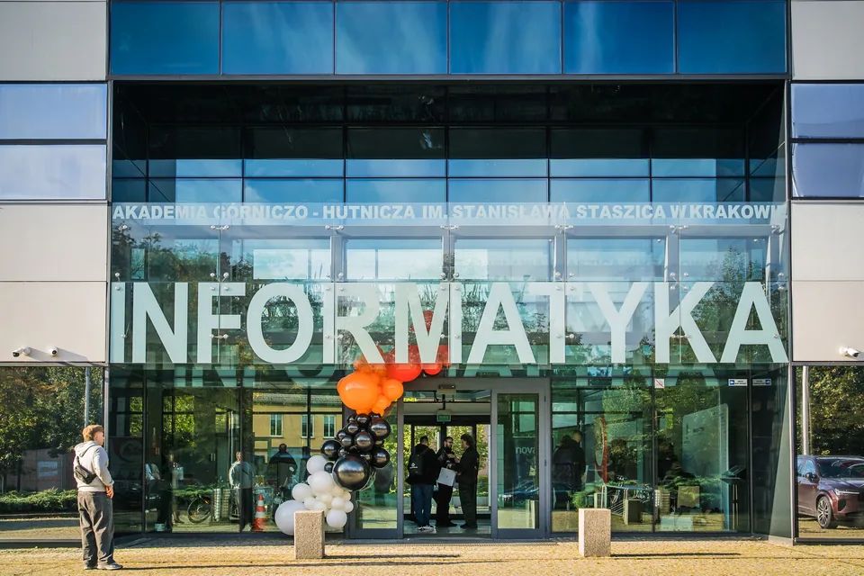
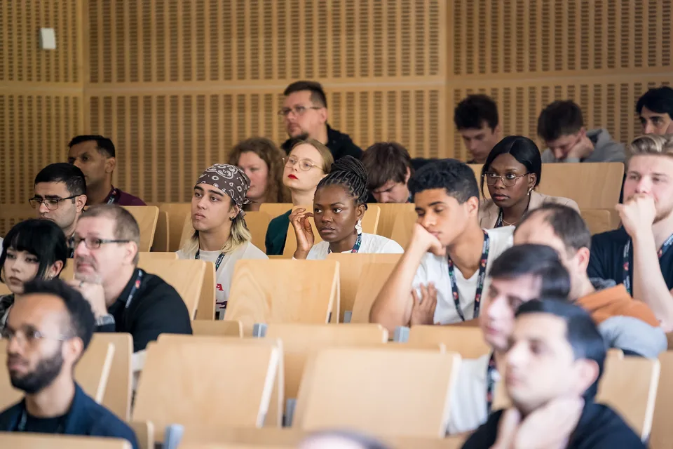
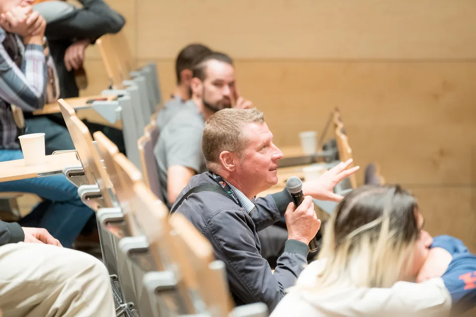
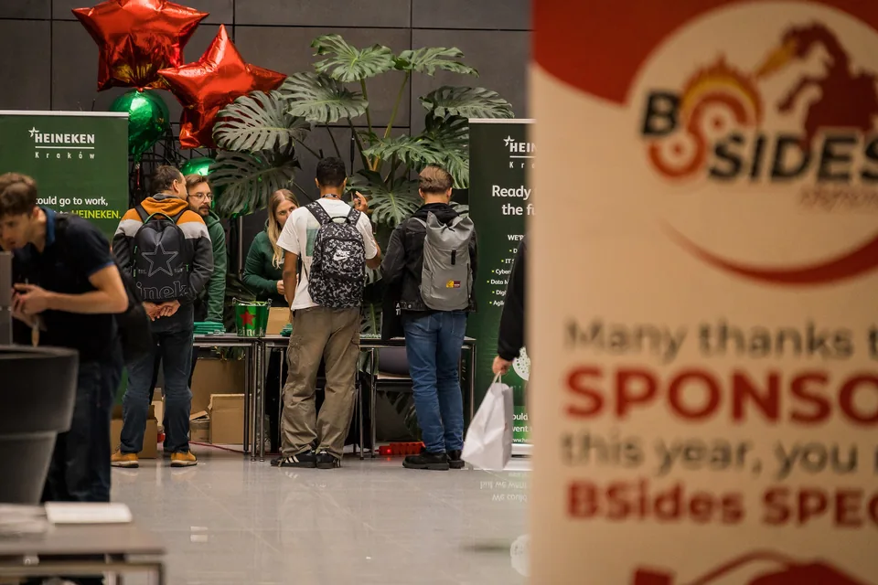
Before Saturday
Two days to go deeper
The conference weekend started early with focused training on 24 and 25 September. These smaller sessions created room to work through techniques in detail before the main event opened its doors.
Application Security, Explained by Iron Man
A developer-facing route through application security, built around practical explanations rather than security theatre.
From Pentests to DevSecOps
A hands-on look at building an open-source AppSec programme with DefectDojo, Dependency-Track and OWASP PTRS.
Agentic AI for Infosec
A practical exploration of agentic systems through the lens of information security work.
Intro to Penetration Testing of non-Western IT Infrastructure
An introduction to testing environments whose technologies and assumptions may sit outside a typical Western enterprise stack.
The main stages
Talks
Discovery and Insights ran in parallel, which meant everyone had to make the traditional conference decision: stay with the plan, or abandon it because a conversation in the corridor changed your mind. Across both tracks, the programme moved from kernel-level defence to AI agents, cloud posture, supply-chain risk, identity research and detection engineering.
Discovery
Track 01 · 09:00–17:45Who Watches the Watchers? Deconstructing EDR Killers from Source to Logs
Paweł Mazur aka M45C07
Paweł went below userland to examine how a custom kernel driver can terminate protected EDR processes through native kernel calls. The session followed the attack path from PID resolution and PP/PPL bypasses to the defensive side: recognising the sudden disappearance of memory telemetry when a sensor is killed.
Zero Trust, Zero Hype: Implementing Strong Security Posture in AWS
Victoria Shutenko
Victoria translated Zero Trust from a familiar slogan into practical AWS architecture. The central problem was how to reduce blast radius and strengthen day-to-day cloud operations without creating a security design so complicated that delivery teams route around it.
Caught in the Act: Real-Time Attack Detection and Kill-Switches with eBPF
Renato Rodrigues
Using Cilium and Tetragon, Renato traced reconnaissance and exfiltration attempts inside Kubernetes and showed how eBPF can detect and stop malicious processes at the kernel level. Live TracingPolicies, Layer 4/7 controls and Gateway API policies connected visibility directly to enforcement.
Your Agent Has a Shell — Securing and Investigating AI Agent Deployments
Derek Banks
Derek treated an AI coding agent as what it operationally is: an external process with tools, credentials and permission to act. The session applied familiar controls—sandboxing, least privilege, supply-chain discipline, monitoring and reconstruction of session artefacts—to a new and occasionally unpredictable endpoint.
GhostLock: Ransomware-Grade Availability Attacks Without Encryption
Kim Dvash
GhostLock demonstrated that severe availability impact does not require encryption, destructive writes or privilege escalation. Legitimate Windows file-locking behaviour can itself become the mechanism for ransomware-grade disruption, which changes both detection assumptions and incident triage.
A Force Multiplier — Introducing SPOTTER
Steve Borosh
SPOTTER connected the scattered intelligence of an engagement—BloodHound graphs, scans, credential data, OSINT and C2 output—into a self-hosted OODA loop. Steve showed how local automation and a local LLM can continuously re-score paths, produce grounded campaign context and keep data on the operator’s own hardware.
Detect, Block, Jail: Kernel-Native Defense in Depth with eBPF
David Papp
David paired two open-source eBPF projects: Synapse for inline network detection and blocking, and Jailer for mandatory access control. Together they demonstrated a kernel-resident defence stack designed to react before an attack reaches the slower userspace controls that defenders traditionally depend on.
The Agents of Chaos: AI Driven Malware Generation
Arad Donenfeld
Arad explored an agent in which AI was not simply assisting malware development but participating throughout the creation process. Model choice, prompt design, code quality, validation, randomisation and signature evasion formed the technical core, followed by what this emerging workflow means for attackers and defenders.
View the published slides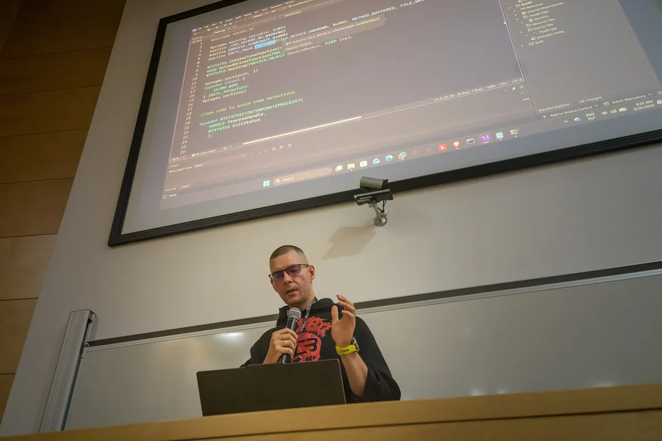
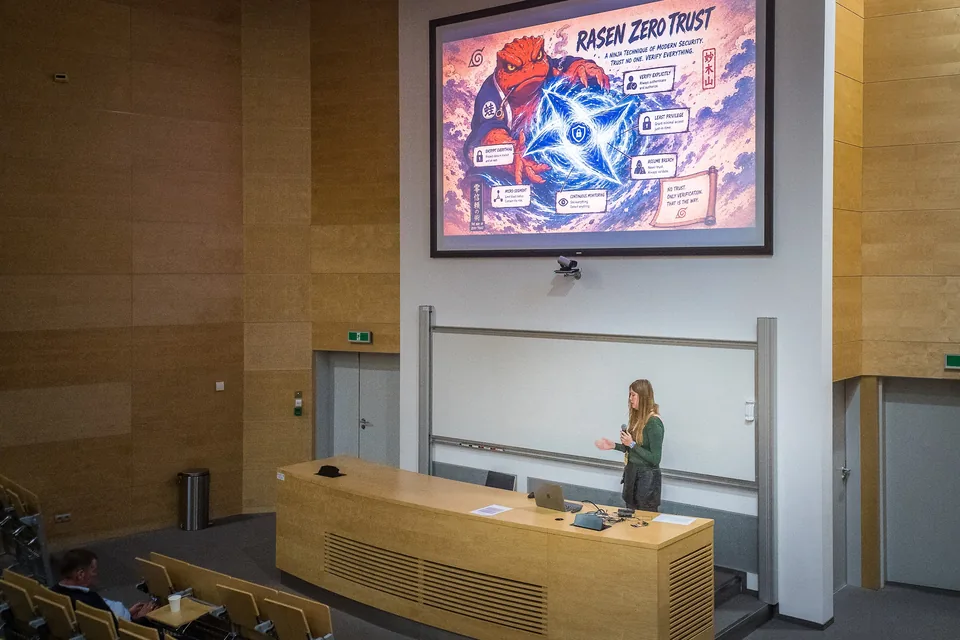
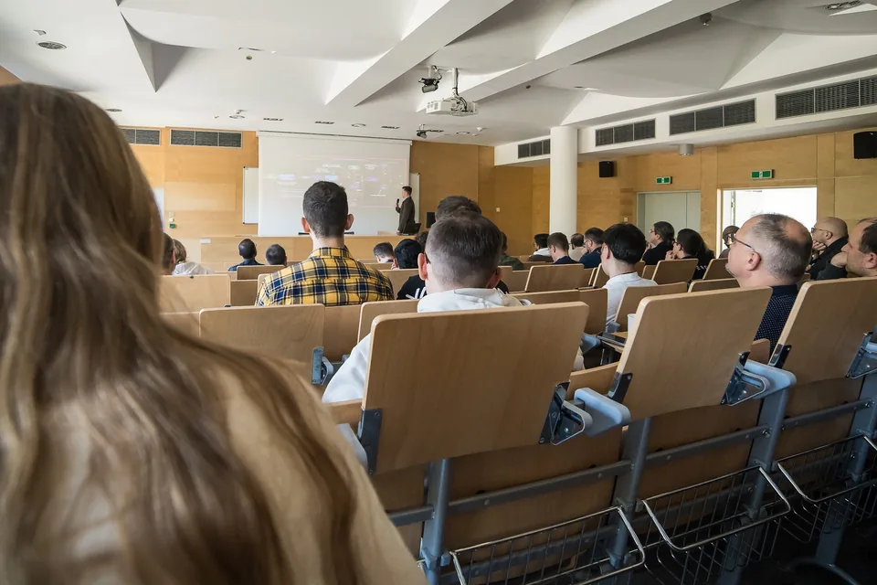
Insights
Track 02 · 09:00–16:45The Safer You Freeze, the Longer You Bleed
Bartosz Złotnik
Freezing dependencies can make a build feel stable, but stability becomes a liability when the frozen version carries risk and the upgrade path has quietly disappeared. Bartosz focused on the uncomfortable operational work that begins after the apparently safe decision to pin everything.
How to Secure & Optimize Your RAG Pipelines with Fine Grained Authorization
Sohan Maheshwar
Sohan made the case that enterprise RAG needs permissions-aware retrieval, not a security check added after generation. The talk compared pre-filtering and post-filtering approaches and demonstrated fine-grained authorisation with Weaviate, LangChain, OpenAI and SpiceDB.
View the published slidesThe CVE Experiment: AI Agents, IoT, and a Stopwatch
András Klein
András tested the claim that AI agents are lowering the barrier to vulnerability research by putting himself, several off-the-shelf IoT devices and a fixed timeline into the experiment. The honest report covered where specialised and general-purpose agents helped, where they wasted time and which promises survived contact with real hardware.
Ghost in the Hiring Machine: How to Spot Fake Personas Before They’re on Your Payroll
Michael Reimsbach and Rishi (@rxerium) C aka rxerium
Starting from the very real risk of fabricated remote-worker identities, Michael and Rishi demonstrated OSINT checks for resumes, contact details and online personas. Two cases showed how convincing identities get through hiring processes, what could have stopped them and where open-source research reaches its limits.
View the published slidesFrom Code to Coverage: A Detection Engineer’s Journey Through the LDAP Wilderness
Andrew Schwartz
Andrew followed six months of work from an early Sigma rule to an evasion-resistant LDAP detection stack. OID transformations, whitespace, hidden parameters and parser behaviour explained why simple signatures fail; statistical approaches offered a path toward detections that hold up against deliberate variation.
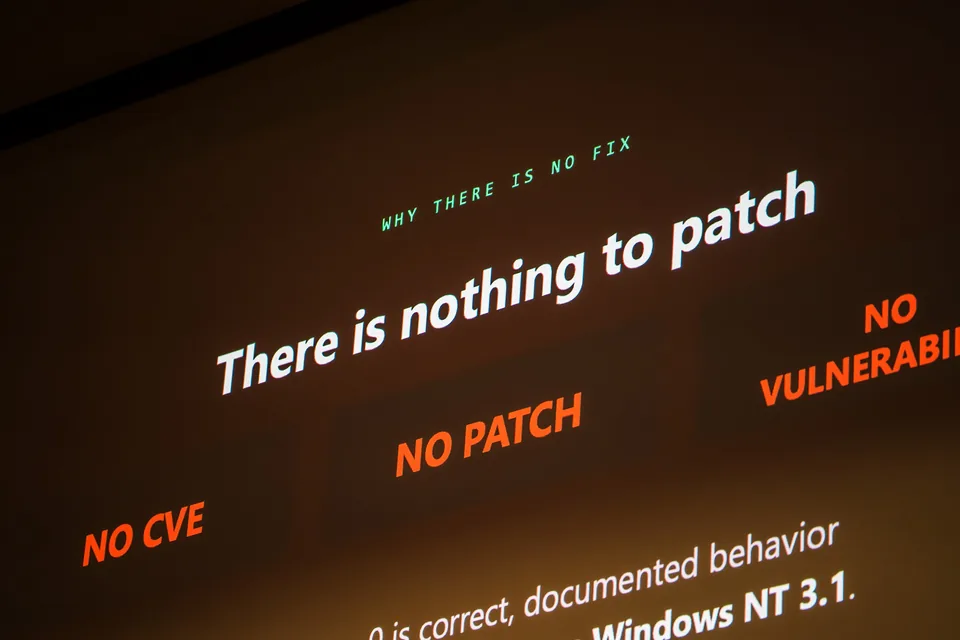
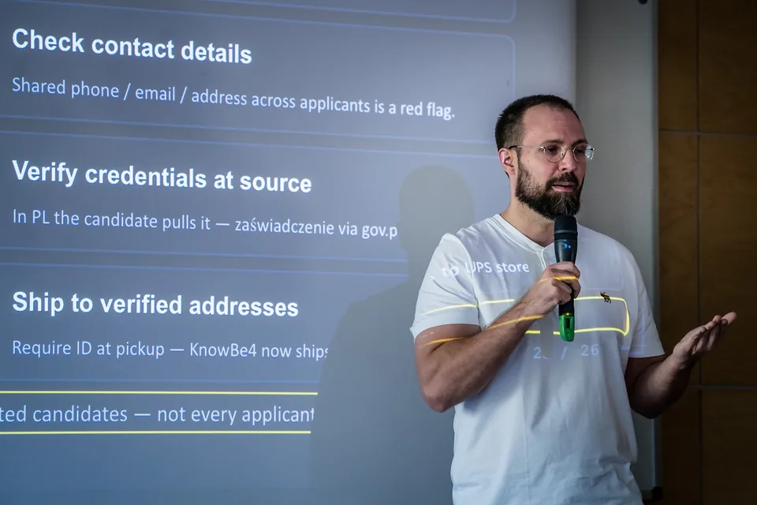
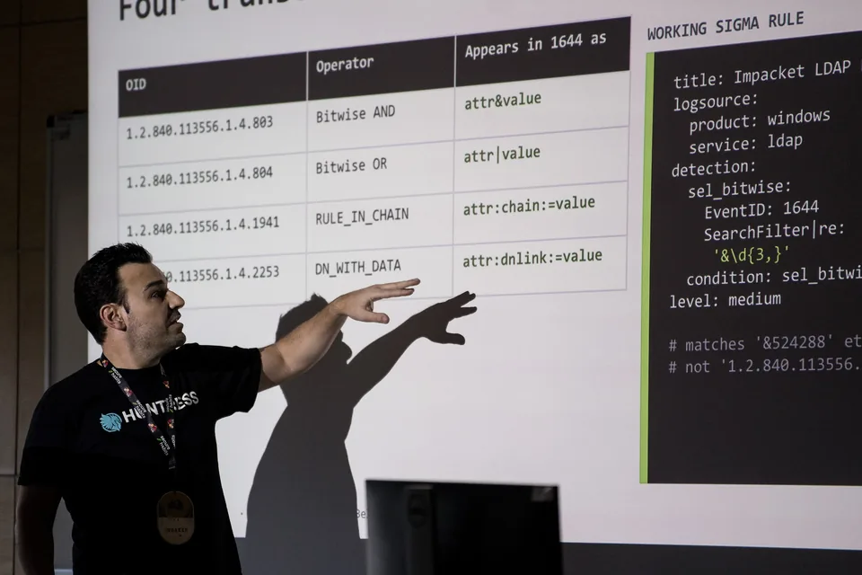
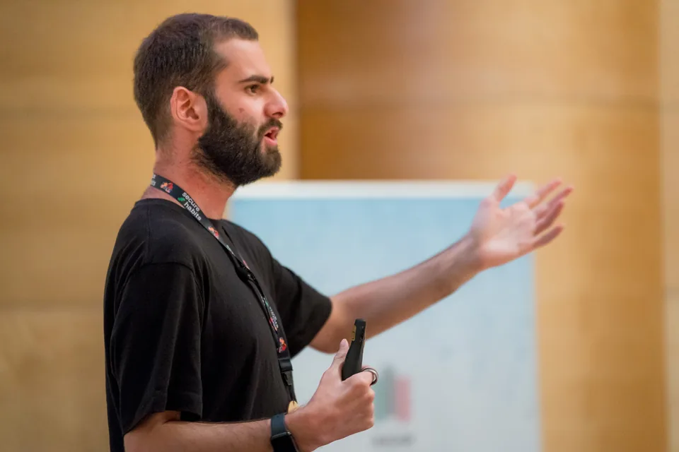
Hands on
Workshops
The workshops replaced passive note-taking with laptops, cards, discussion and decisions. Three sessions in the Villages gave participants time to work through methods rather than only hear about them.
WORKSHOP - Fuzzing *******: Vulnerability Research for Less Documented Protocols and Systems
Kashif Amanat and Naveenkumar Angappan
This two-hour workshop covered firmware emulation, reverse engineering, custom harnesses and crash triage for closed or poorly documented systems used in IoT, automotive and industrial environments. Some protocol details remained intentionally redacted in the public agenda, but the method was concrete: rehost, observe, fuzz and analyse.
Workshop - Malware & Monsters!
Klaus Agnoletti
Malware & Monsters turned incident response into a story-driven, role-based game. Small teams worked as Detectives, Protectors, Trackers and Communicators, then connected the creature hunt back to escalation, threat evolution and the coordination problems that make real incidents difficult.
Security Leadership Through Mentoring
Alina Malinowska, Daniel Medina and Leonardo Lopes de Lima Reigada
Mid- and senior-level practitioners worked through mentoring relationships, expectation setting, feedback and career development. The workshop separated mentoring from coaching and management, then asked participants to adapt their approach to different people, career stages and goals.
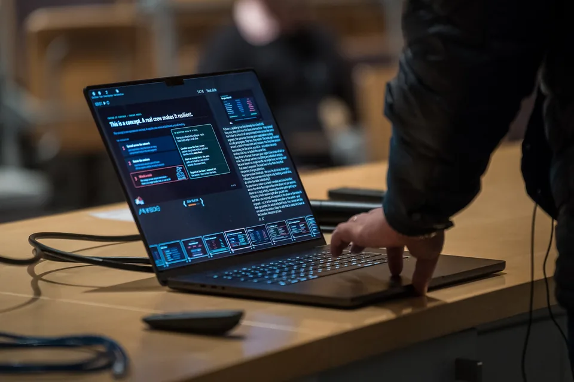
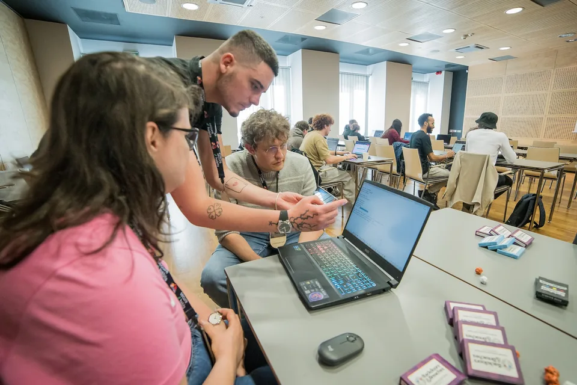
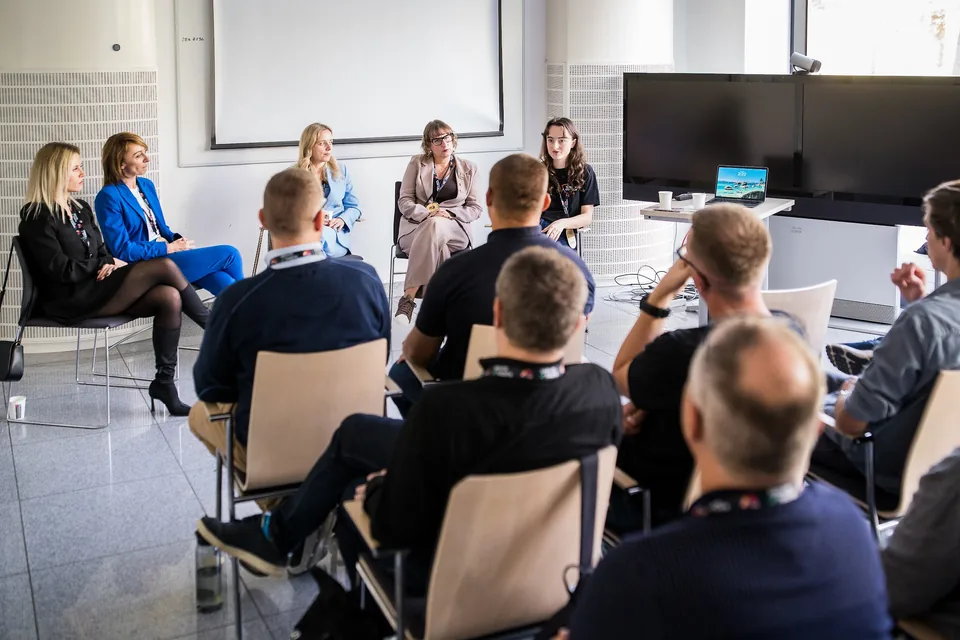
An open microphone
Lightning Talks
The Open Lightning Talks block belonged to the audience. After a short introduction to public speaking and a few practical ways to get past the fear of the microphone, community members could claim a slot of up to fifteen minutes for a tool, project, experiment, lesson or research idea.
There was deliberately no fixed published line-up: no polished deck required, no perfect English required and no previous conference experience required. That uncertainty was the format, not a missing agenda. It gave first-time speakers a low-friction way to move from “one day” to “today”.
Why it matters: a community stage should create new speakers, not only rotate the people who are already comfortable on one.
Mini-events inside the event
Villages
The four Villages had their own rhythms. Some looked like a compact talk track; others looked like a tabletop, a lab, a mentoring circle or a room full of people debating what to protect first. Together they made the conference something you could participate in rather than only watch.
Business Village
Technology, evidence and decisionsThe Business Village connected application security work to the decisions, evidence and obligations around it. It was technical enough to include live platform workflows, but always returned to the question of how organisations can prove that security work is happening.
Nova8 — Checkmarx One and Codebashing highlights
A demo-led view of Checkmarx One in the development lifecycle, from finding and prioritising vulnerabilities to contextual secure-coding practice with Codebashing.
The CRA clock is already running: what manufacturers must be able to prove
The EU Cyber Resilience Act became an operational programme: secure-by-design evidence, vulnerability reporting and practical mappings to OWASP SAMM, the CEN/CENELEC EN 40000 series and ISO/IEC 27034.
Antisyphon Training product offerings, with demos of products and FREE sign ups. (Give aways included)
Live demonstrations, free sign-ups and a practical tour of learning resources gave visitors something useful to test after the event.
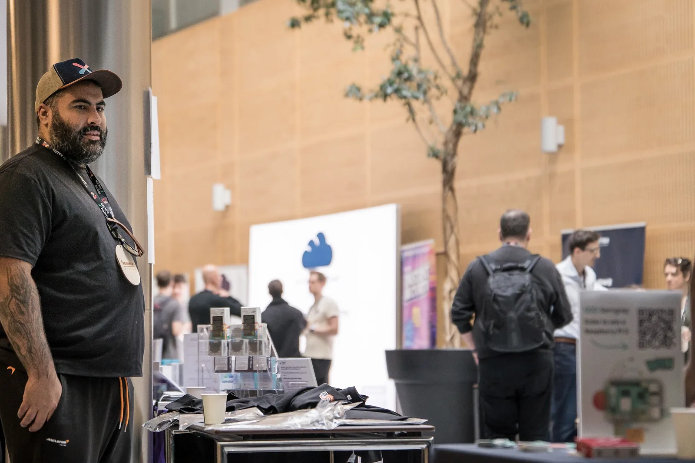
AppSec & Red Team Village
Builders, breakers and uncomfortable edge casesThis Village followed software risk from CI/CD to the browser, from autonomous offensive tooling to regulation and server-side attacks hidden behind document generation. It also hosted the conference’s deep fuzzing workshop.
Beyond SHA Pinning: Security for CI/CD Pipelines
Real supply-chain attacks framed practical defences for privileged pipelines, including repository configurations that can turn a pull request into remote code execution.
How To Create a Self-Evolving Autonomous Offensive Security Agent
Molly separated LLM-generated hypotheses from deterministic execution, stored persistent memory in a graph and Markdown, and built, validated and added missing Python or Rust tools to its own testing armory.
Even more alert(1)
Modern XSS was treated as browser behaviour, not only server output. DOMinic and ReflectJS labs showed how client-side data reaches executable sinks even when obvious calls such as innerHTML or eval are absent.
MCP security hot potato
When business wants AI, developers want a new protocol and security inherits the deadline, Model Context Protocol becomes a very literal hot potato. The session unpacked the security work hiding behind the enthusiasm.
When regulations collide: A crisis management story
A live incident became a four-way collision between GDPR, NIS 2, DORA and the EU AI Act. The practical playbook focused on concurrent response when obligations overlap and teams cannot afford to debate ownership after the crisis starts.
Discovering 0-Days in HTML-to-PDF Generators (40 Million Monthly Targets)
Unsanitised HTML became a route to local file reads, SSRF, RCE, template injection, LFI, file oracles and denial of service across six widely used PDF engines. The talk connected exploit patterns to code review and production mitigations.
View the published slides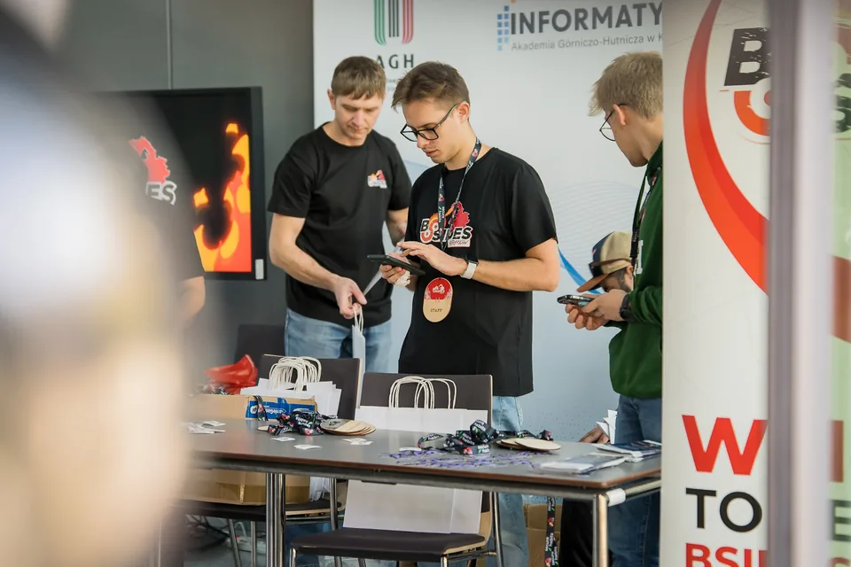
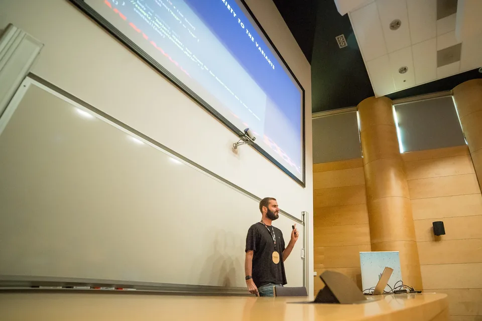
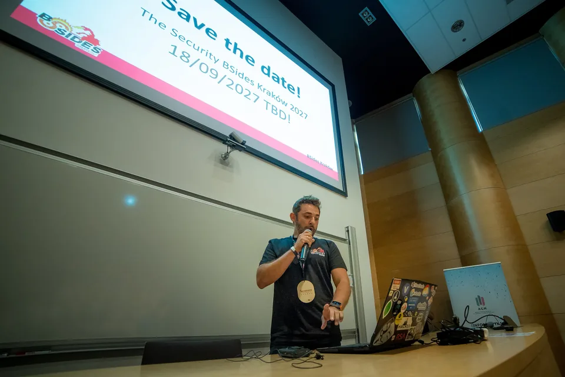
Cyber Games Village
Security decisions, now with diceCyber Games made collaboration visible. The room was filled with cards, laptops, dice, incident stories and teams negotiating priorities under pressure. Winning was welcome; learning why a plan failed was also part of the game.
All day - The League of Security Architects
Teams of two to four selected critical components, applied controls and faced attack and event cards over six rounds. Reputation points and a leaderboard added competition to a very familiar problem: there is never enough time or budget to protect everything equally.
Win prizes! Compete as a team or individual
Tabletop groups worked through realistic breach and incident scenarios with Black Hills InfoSec and HackBack, using the Backdoors & Breaches deck and D20 dice to explore defensive decisions.
Capture the Flag tournament
Solo players and teams worked through hacking challenges throughout the day, with prizes for the strongest individual and team results.
Elevation of MLSec game session
Using 52 AI, LLM and ML threat cards, small groups threat-modelled an architecture containing machine learning, an LLM chatbot, agents and an MCP server. No previous AI-security or threat-modelling experience was required.
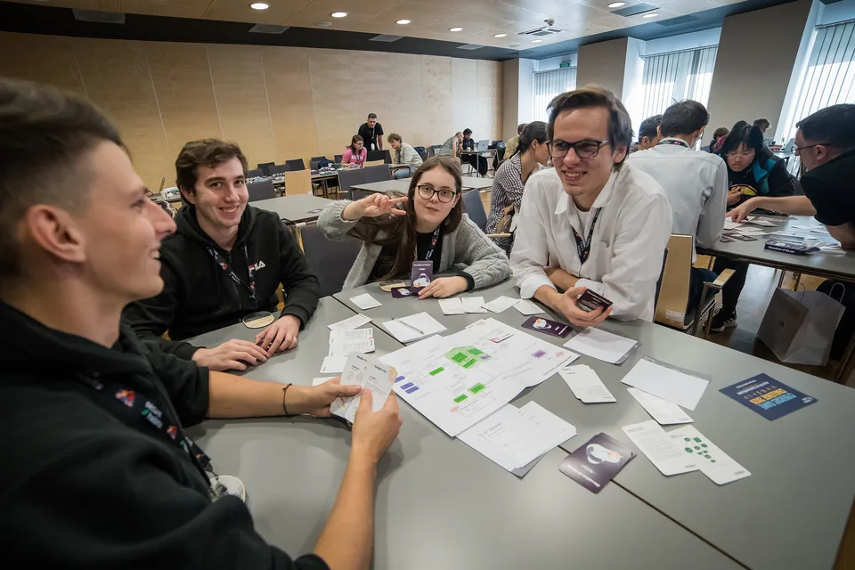

Women Go Tech Village
Careers, leadership and honest experienceWomen Go Tech created a conversation about building a life in cybersecurity, not merely entering the industry. Career paths, barriers, confidence, mentorship and leadership were discussed as lived experiences rather than abstract diversity statistics.
Women in Cybersecurity: Lessons Beyond the Statistics
The fireside chat opened the floor to different routes into security, the barriers that persist and the relationships that help people grow. Its interactive format made the audience part of the discussion.
Security Leadership Through Mentoring
The following workshop turned that conversation into practical mentoring tools for experienced practitioners who want to develop others and build healthier security teams.
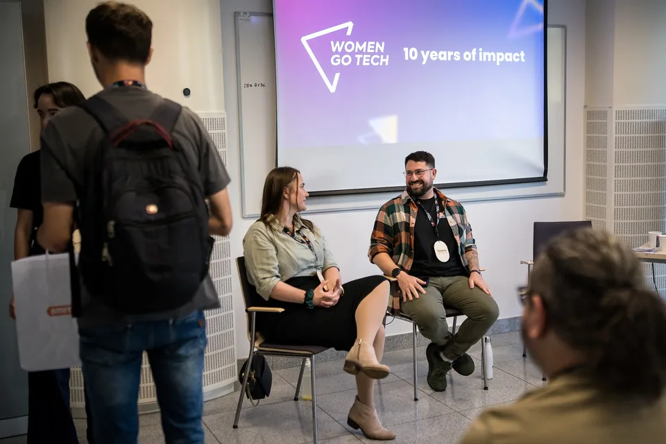
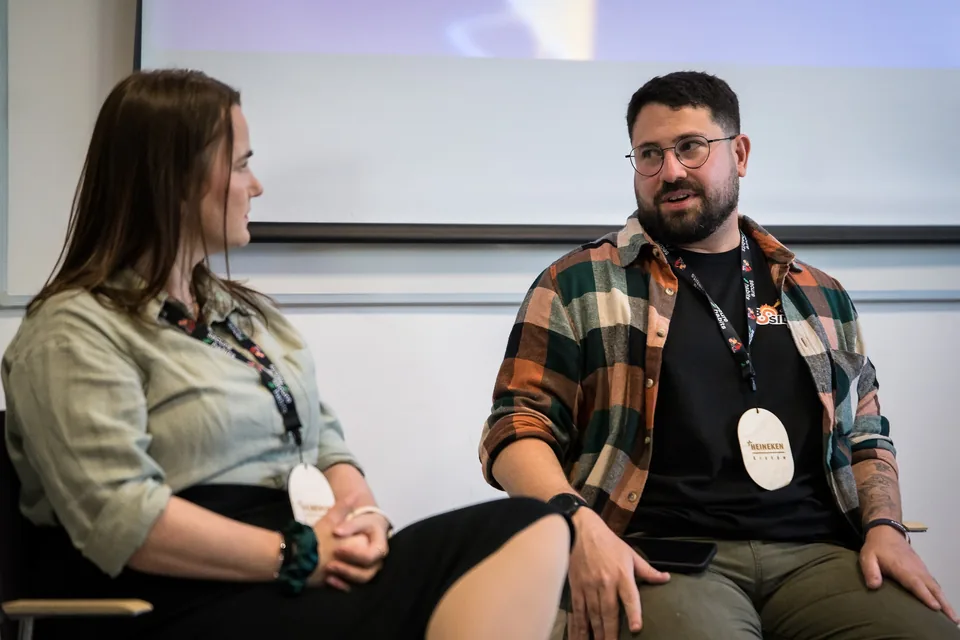
No slide deck required
The conference between the conference
The timetable explains where people were supposed to be. It does not capture the conversation that started at a sponsor stand and continued through lunch, the laptop opened to show one more thing, or the question asked after a speaker had already packed away the microphone.
Some of the most useful moments at a BSides happen because the schedule leaves enough friction for people to collide. The coffee helps. So does the fact that nobody is surprised when a casual introduction becomes a detailed conversation about an exploit chain.
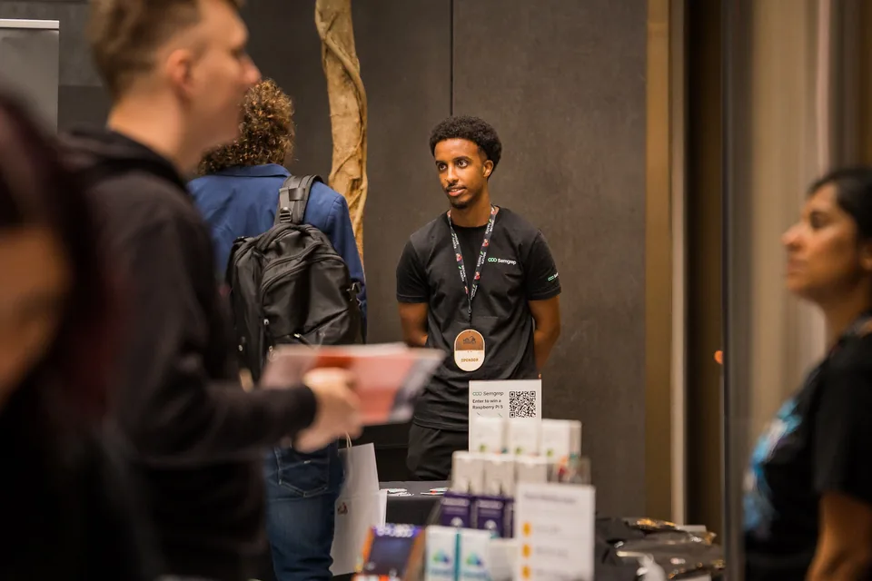
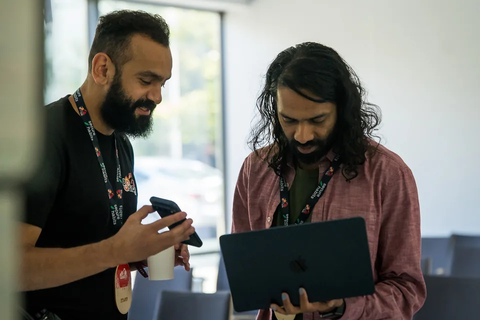
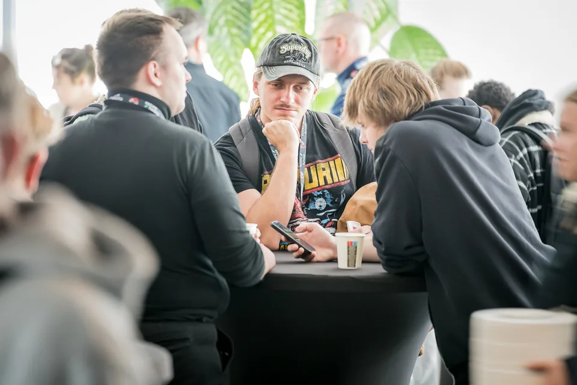
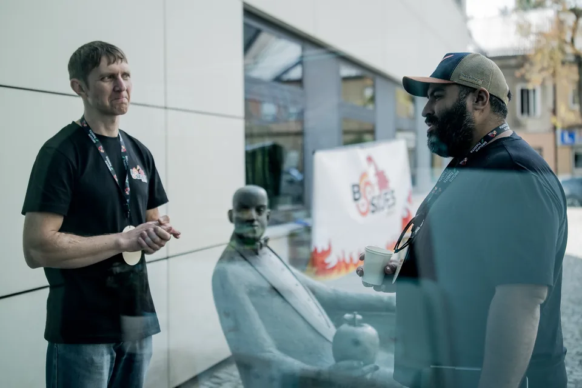
Keeping BSides accessible
Sponsors and partners
Community events still need rooms, equipment, badges, logistics and people willing to help. Our 2026 sponsors and partners made it possible to keep BSides Kraków accessible while giving the programme room to grow. Thank you for supporting the event without trying to turn it into a sales floor.
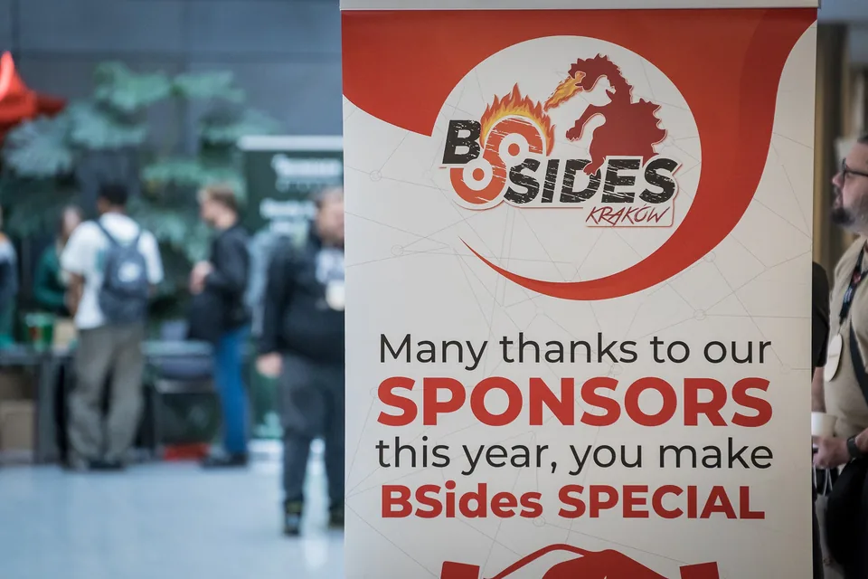
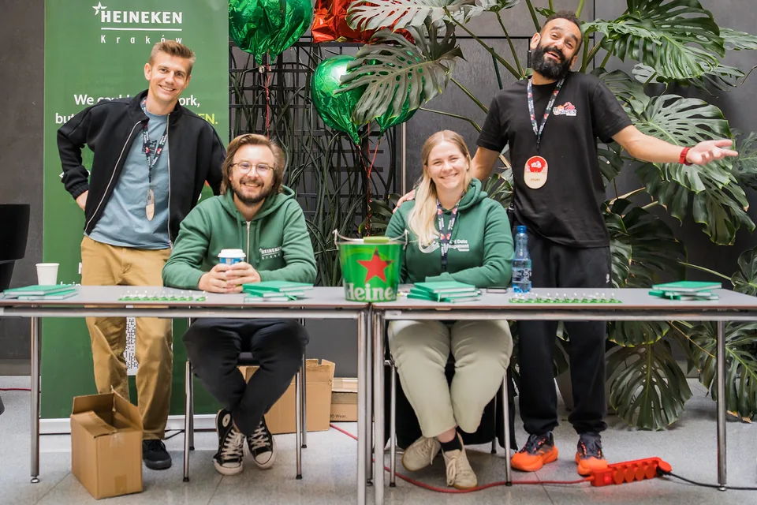
Badge and leading sponsors
Contributing, supporting, notable and supporter sponsors
Community, education, media and event partners

The invisible work
Volunteers and crew
A conference day looks smooth only when many people are solving small problems before most attendees notice them. Registration, room coordination, speaker support, directions, Village setup, equipment, timing, last-minute changes and the inevitable troubleshooting all depended on volunteers and crew.
Thank you to everyone who arrived early, stayed late, carried boxes, found cables, answered the same question again and kept calm when the answer was not immediately obvious.
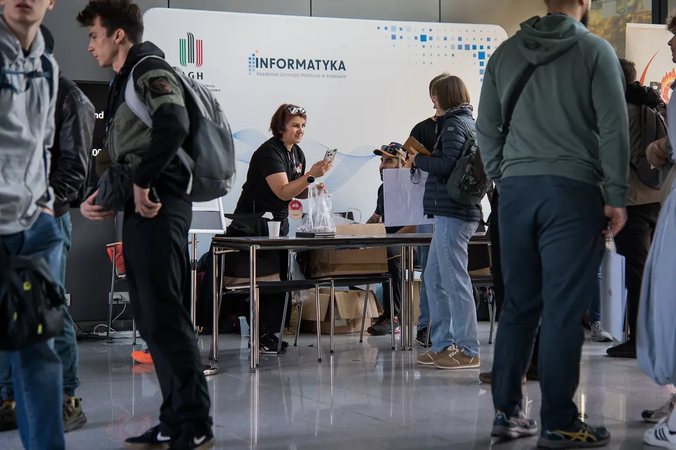
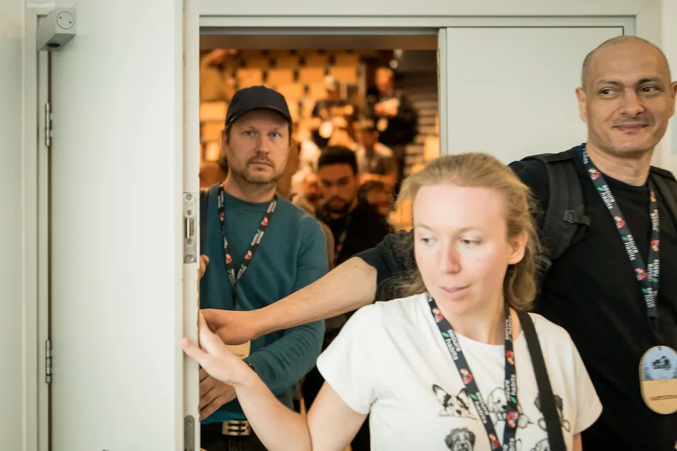

Until next time
We will keep showing up
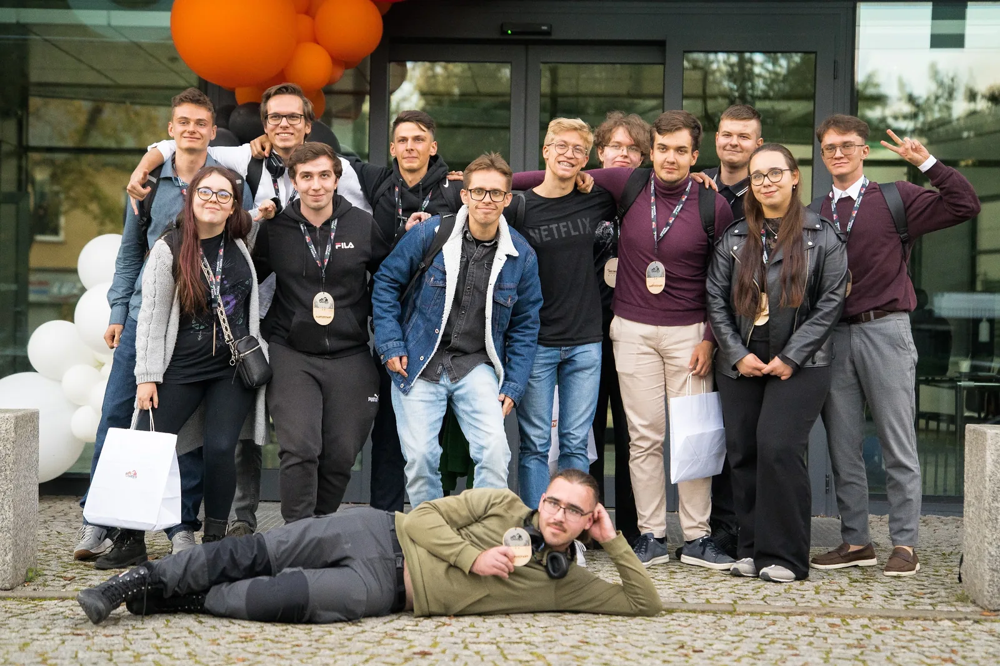
Thank you, Kraków.
To every attendee, speaker, trainer, Village organiser, volunteer, sponsor and partner: thank you for trusting us with your Saturday and for giving something back to the people around you.
We are proud of what this community built for the fifth edition. BSides Kraków exists because people keep showing up for it. We will keep showing up too.
See you at the next edition.